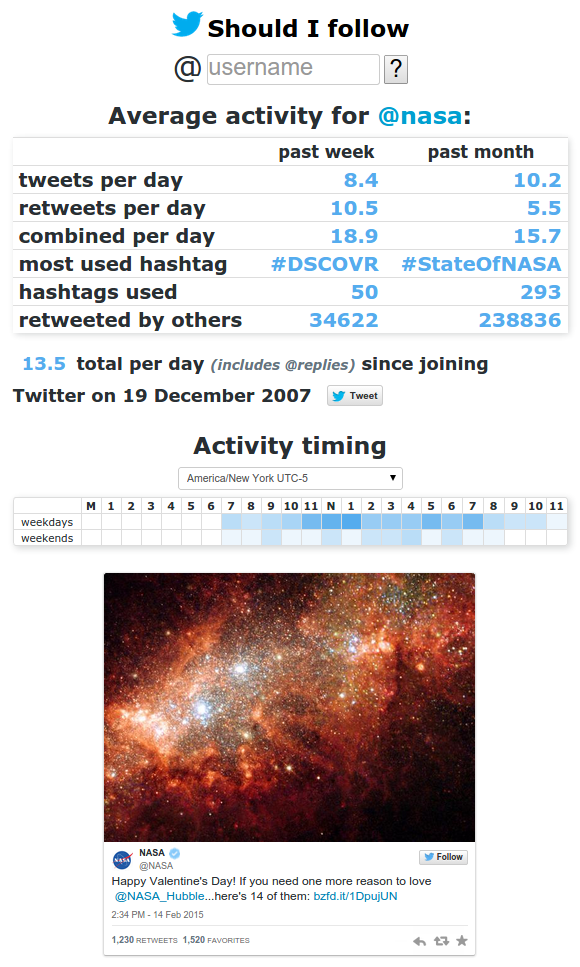

Summary
Software Engineer
StopBadware
What an amazing time to be a software engineer! As we stand on the precipice of the era focused on native applications and continue our transition toward web-based apps and mobile development. Not since the introduction of the PC itself have we seen such a fundamental shift in the use and impact of computers in our lives.
A former banquet manager, I originally began learning to program only to assist in my hobby of stock trading with no intention of a career change, but soon it was clear I was enjoying the coding not because it would lead to better trading, but because I was truly enjoying writing code. It was then I decided my future lay not with hotels, but with helping to usher in this exciting new era.
Presently the Software Engineer at StopBadware, where I design, build, and maintain the applications and databases that drive StopBadware's mission of making the Web safer through the prevention, mitigation, and remediation of badware websites. It is incredibly exciting and rewarding to do my small part in improving Web safety for everyone.


Skills, Languages, & Technologies
Development Projects
Should I Follow
Data Sharing Program
Optionometer
Capstone Project
cppticker
Trade Detective
Quote Flow Monitor
Some colleagues and I were discussing the difficulty in assessing someone's Twitter activity just from glancing at their profile (largely due to replies and retweets). Thus was the motivation behind ShouldIFollow
A fairly simple Ruby on Rails app running on Heroku it displays some metrics to get a feel for how frequently someone tweets. Open source and available for viewing/forking on GitHub
StopBadware's Badware Data Sharing Program, currently in its pilot phase "...aims to improve security researchers' and practitioners' access to quality, timely data. Participants provide StopBadware with an automated feed of time-stamped badware URLs and related data. The data is shared with other participants and with vetted academic and non-commercial researchers. Data is also used by StopBadware to inform our independent review process, to generate aggregated data, to identify and report on badware trends, and to communicate with site owners and service providers (e.g., Web hosting providers) about badware within their zones of control..." [Excerpt from stopbadware.org/data-sharing]
The Data Sharing Program is three separate Java applications, communicating via combination of API and Iron.io's IronMQ message queues. An importer to retrieve the participants data, a resolver to resolve all hosts to IPs and all IPs to Autonomous Systems, and the API that provides access to the data (MongoDB is used as a datastore).
 Developed as a side project, www.optionometer.com was created for my hobby of option trading. The data presented represented analysis of nearly half a million option spread combinations on the back-end (written in Java). In an effort to find the most profitable option trades available the Java app would constantly calculate potential multi-leg strategies throughout the trading day. Of the hundreds of thousands of possible combinations the app selected the best ones and passes those to a MySQL database where the Ruby on Rails front-end retrieved and displayed the data (sadly, continuing to keep the data updated didn't make economic sense at the end of AWS's free tier year).
Developed as a side project, www.optionometer.com was created for my hobby of option trading. The data presented represented analysis of nearly half a million option spread combinations on the back-end (written in Java). In an effort to find the most profitable option trades available the Java app would constantly calculate potential multi-leg strategies throughout the trading day. Of the hundreds of thousands of possible combinations the app selected the best ones and passes those to a MySQL database where the Ruby on Rails front-end retrieved and displayed the data (sadly, continuing to keep the data updated didn't make economic sense at the end of AWS's free tier year).
 Received a 3.96 (out of 4.0) on my Capstone Project for WGU, a Java application that predicts stock market movement based on Twitter activity. The program analyzes mentions of a company's ticker symbol to determine a bullish, bearish, or neutral opinion based on the content of each post. Each score is then adjusted for age of post and past accuracy of author before determining the overall sentiment for a stock.
Received a 3.96 (out of 4.0) on my Capstone Project for WGU, a Java application that predicts stock market movement based on Twitter activity. The program analyzes mentions of a company's ticker symbol to determine a bullish, bearish, or neutral opinion based on the content of each post. Each score is then adjusted for age of post and past accuracy of author before determining the overall sentiment for a stock.
My present side project is redoing this project in C++ in order to learn the language (as odd as this is to hear from someone who started coding in 2010 I really enjoy C++). This rewrite is viewable as an open source project on GitHub
After finishing school I set a goal for myself to learn C++ with the hope of eventually being able to contribute to an open source game such as 0 A.D. After picking up the basics from a tutorial I created a command line stock ticker application that regularly updates and displays data for U.S. stocks and indices. This was also my first open source project and can be viewed on GitHub.
Designed to assist BT's Misison Control with trade audits, TradeDetective saves analysts a significant amount of time by bringing together the needed information on a trade investigation. Originally coded in Ruby on Rails before a re-deployment in PHP to facilitate better integration with other tools in use.
Similar to the above, BBO Detective was created to match trades that can go through multiple liquidity providers (such as in BT's best bid/best offer system). Also completed in PHP, though it utilizes heavier use of JavaScript to shift more of the processing client-side.
This web-app introduced a scalable solution for BT's Mission Control to monitor proper feeding of FOREX quotes. On a single page an analyst can monitor every security on every server with both visual and audible warnings for quotes not updating as expected. This web-app is written almost entirely in JavaScript, with only a minimal amount of HTML framework and a PHP back-end that serves only to respond to AJAX calls and retrieve the requested information from MySQL.
Work Experience
StopBadware
Software EngineerFebruary 2012 - Present
Boston Technologies Inc
Team Manager - Trading Systems AnalyticsAugust 2010 - February 2012
Starwood Hotels & Resorts
Banquet Supervisor - Westin Boston WaterfrontMarch 2010 - August 2010
Hyatt Hotels Corporation
Assistant Banquet Manager - Hyatt Regency BostonSeptember 2005 - January 2009
Food & Beverage Supervisor - Hyatt Regency Greenwich
November 2004 - September 2005
Education & Certifications
Western Governors University
Bachelor of Science Information Technology - SoftwareVillanova University
Political ScienceCertifications
- Oracle Certified Professional Java Programmer
- CIW JavaScript Specialist
- CIW Perl Specialist
- CIW Database Specialist
- CIW Web Design Specialist
- CIW Web Development Professional
- CIW Web Foundations Associate
- Microsoft Certified Technology Specialist
- CompTIA Project+
- CompTIA Security+
- CompTIA A+ Essentials